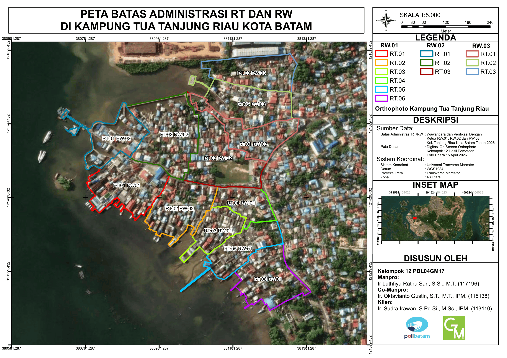

Galeri Kegiatan & Informasi Kontak
Dokumentasi Lapangan & SIG

Kegiatan Pemetaan Partisipatif di Lapangan

Proses Kompilasi & Pengolahan Data Spasial
Profil Pembuat
| Nama | : Puput Lestari |
| NIM | : 3322411034 |
| Kelas | : Teknologi Geomatika 4B Malam |
| Instansi | : Politeknik Negeri Batam |